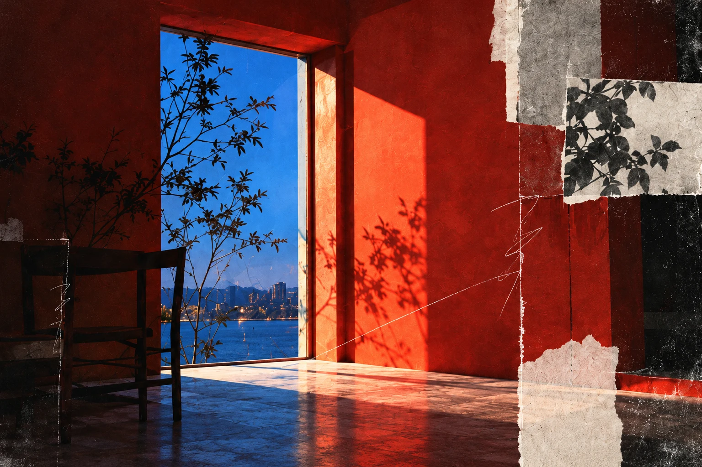

Undergraduate study interests
Where music
meets possibility.
Nine years of guzheng give Claire a sustained relationship with rhythm, timing, gesture, and attentive listening. In undergraduate study, she hopes to carry those questions into visual art, interaction, and creative technology.
A pulse
in light.
How might repeated marks, brightness, and intervals of space create a sense of pulse?
A future studio direction could translate the timing of a musical phrase into drawing, cut paper, pigment, or a sequence of images. Repetition and pause could make rhythm visible even when no sound is present.
Explore the light direction
A hand
in motion.
How can a touch, sweep, or pause change what a visitor sees or hears?
A future interactive direction could connect movement to the intensity of an image or sound. The question is how feedback can stay legible and attentive—more like a musical response than a decorative reaction.
Explore the gesture direction
Listening
as space.
What changes when listening becomes something visual or shared?
A future creative-technology direction could let sound leave a changing visual trace as a viewer moves or pauses. It could ask how timing, participation, and quiet shape a shared experience.
Explore the listening direction Try the guzheng sound experience